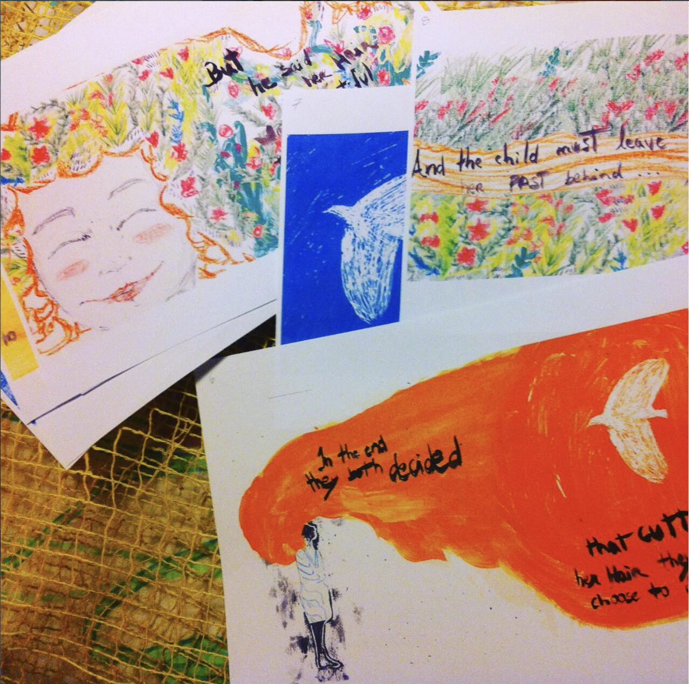
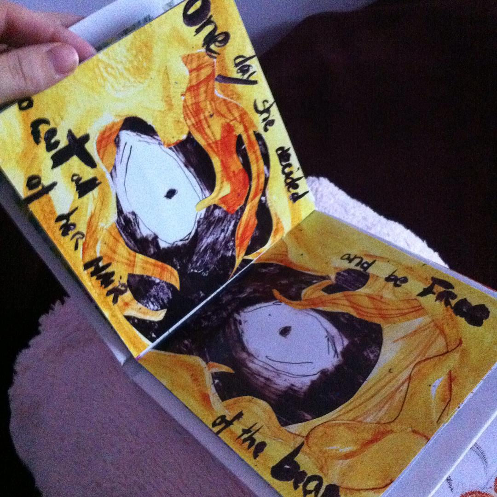
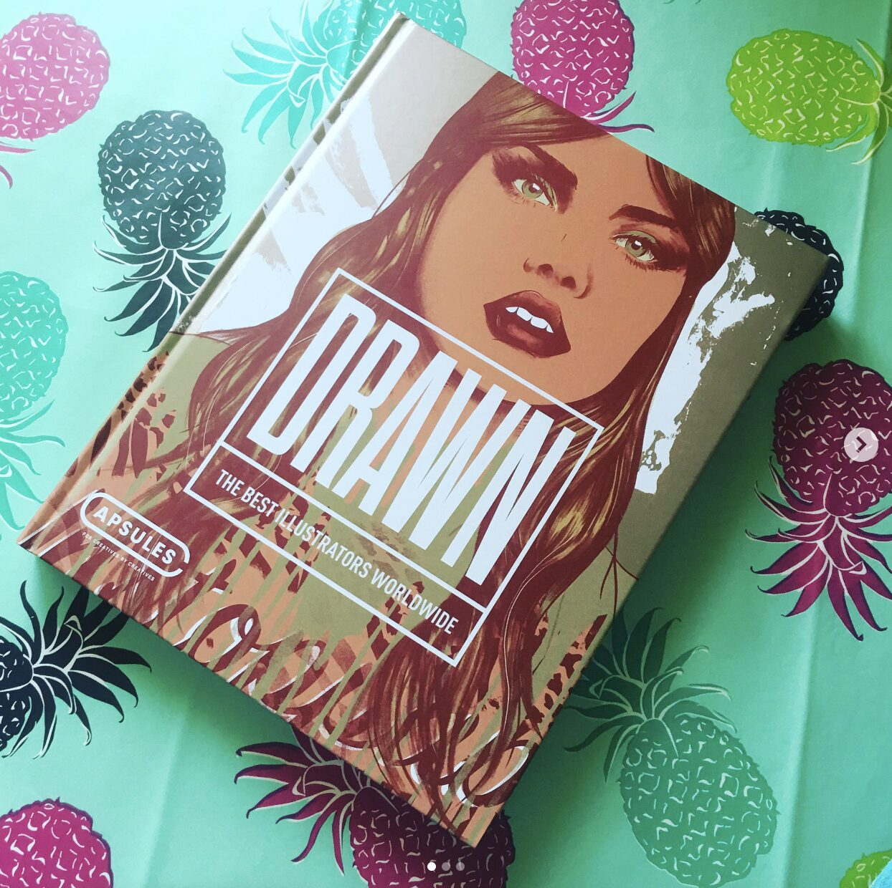
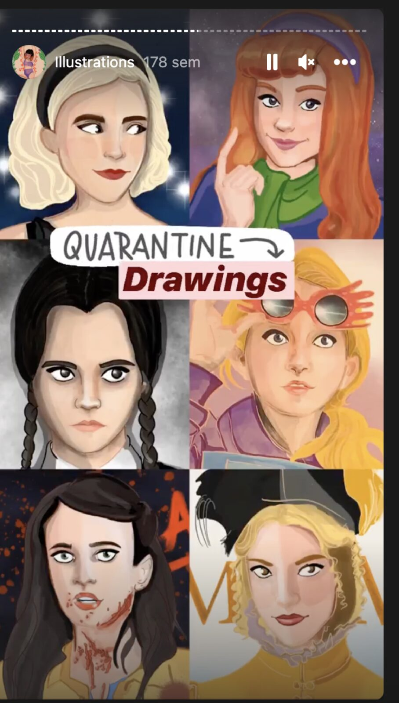
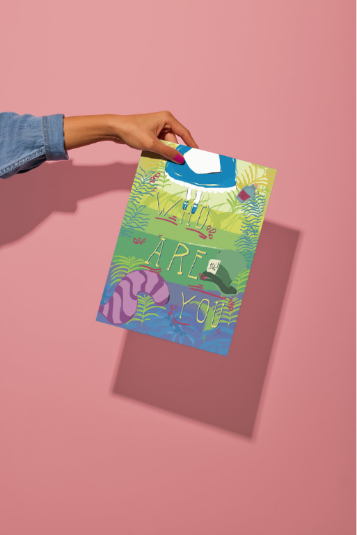
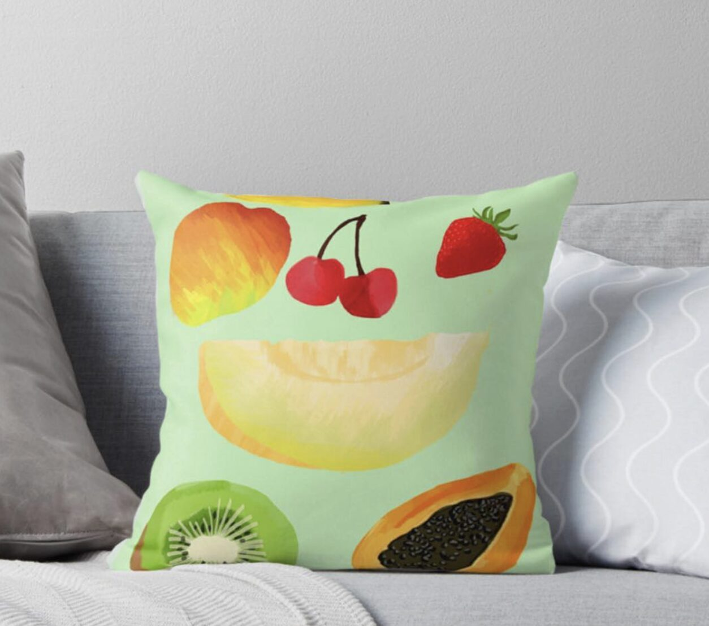
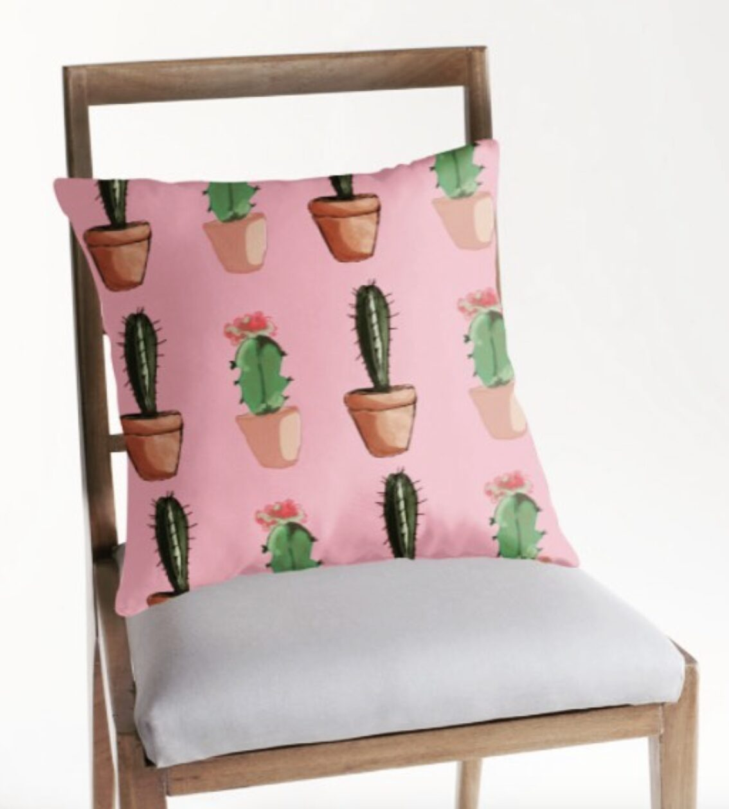
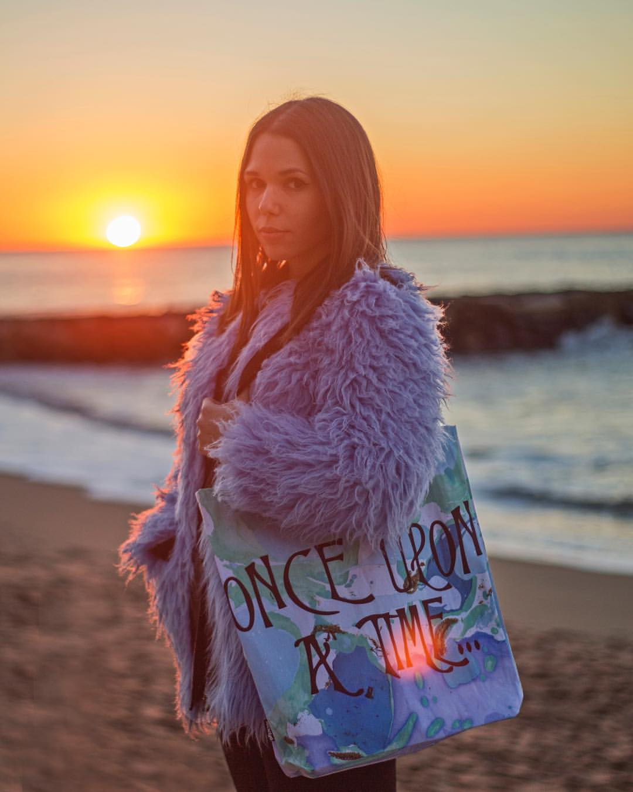

case study 02 —
a handmade children's book, told in pictures.
01 —
The Girl and the Bird started as a personal project — a story I wanted to tell mostly through pictures, with words doing only the bits they had to. The challenge was holding both roles at once: writing tight enough that the illustrations could carry the rest, and illustrating in a way that didn't just describe the text but pushed the story forward.
The book was made by hand, page by page, and printed in a short run — a deliberately tactile, slightly imperfect object rather than a mass-market children's product.
02 —
Wrote the narrative arc and page-by-page beats, balancing what the words said with what the illustrations would carry.
Hand-painted spreads with a deliberately loose, expressive feel — the bird's character and the girl's emotional journey told through colour and gesture.
Cover, typography, page composition and final print prep for a short, hand-finished print run.
Submitted to publications and shared with the illustration community — leading to the DRAWN feature.



elsewhere —
The book is one chapter in a longer illustration practice — print series, character portraits, and a habit of putting the work onto wearable, sittable, hold-able things.





03 —
"Featured in DRAWN: The Best Illustrators in the World."
The book opened the door to publication features and put my work in front of an international illustration audience. More importantly — it proved to me that I could write and illustrate a complete, finished thing on my own, which shaped a lot of what I've done since.